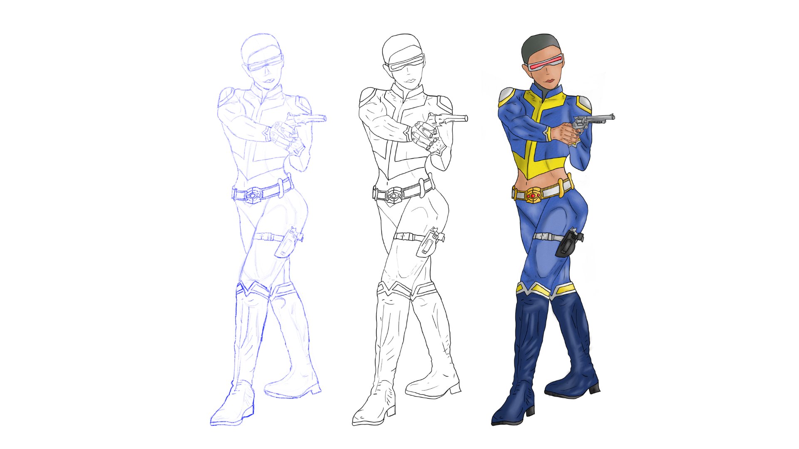
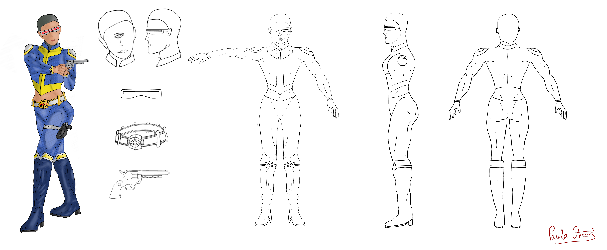
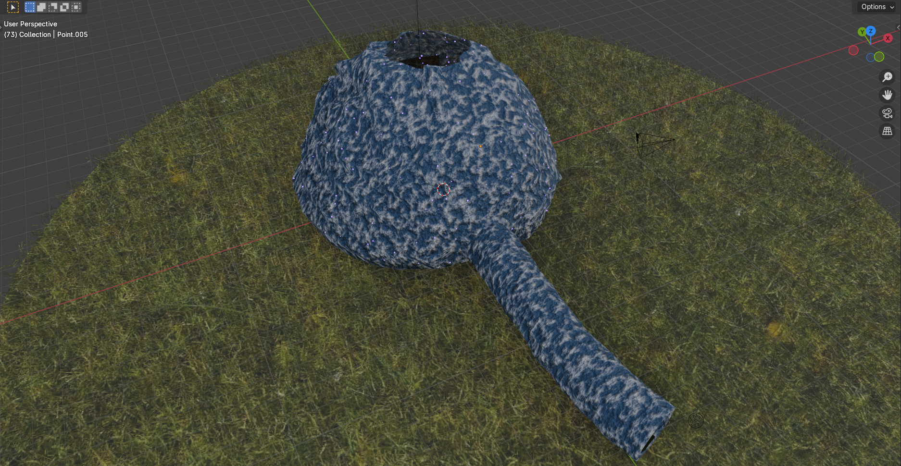
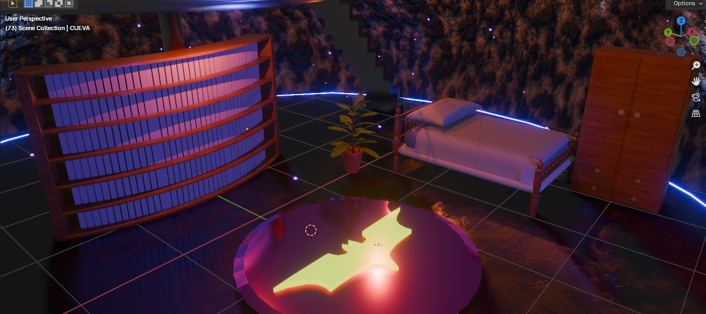
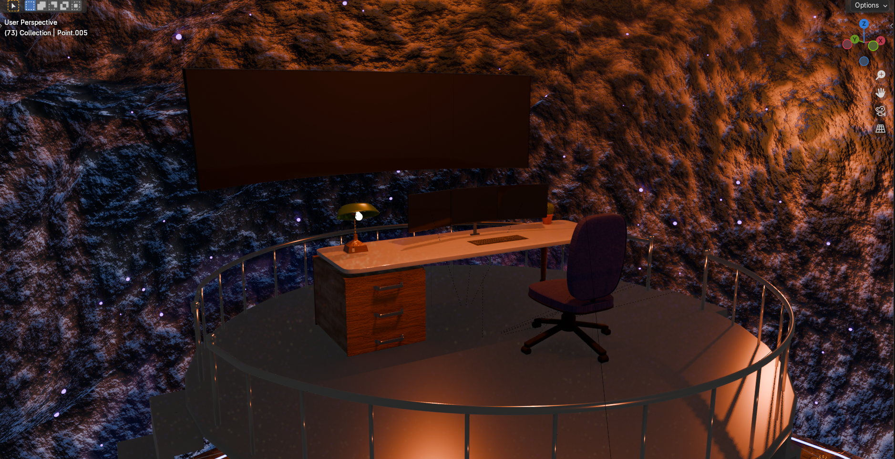
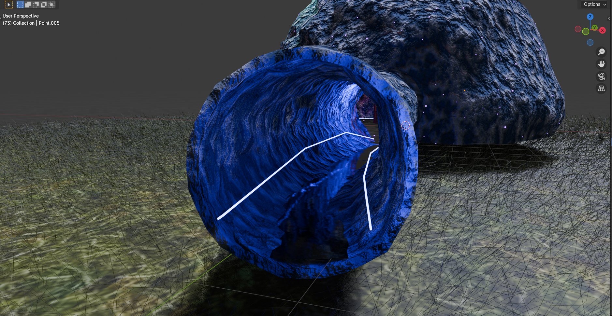
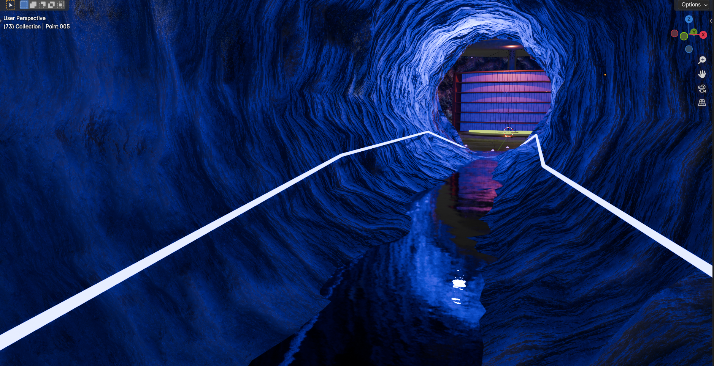
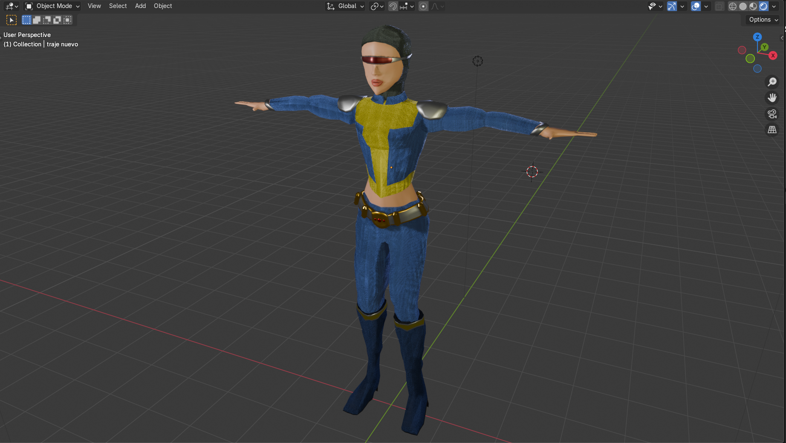
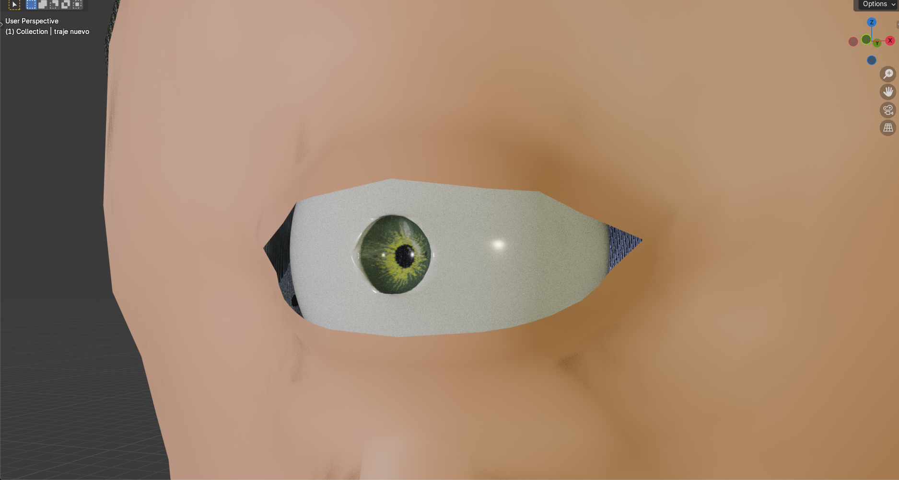

Secret Cave -
From sketch to laser beam
A full pipeline project starting from 2D character concept art (sketching → inking → digital painting → modelsheet) through to a fully animated Blender scene: a superhero's secret cave with walk cycles, cinematic camera paths, water simulation, procedural grass, and a real-time laser beam that changes the cave's lighting as it fires.
Overview
The full pipeline
Phase 1 - 2D design
Character concept art
Sketching → inking → digital painting → modelsheet. A female cyclops superhero designed from scratch with custom GIMP textures and a full colour palette.
Phase 2 - 3D modelling
Environment & character
Full secret cave scene modelled in Blender using primitives, mesh editing, modifiers (Array, Simple Deform, Solidify, Physics). Character built with UV unwrapping and Texture Paint.
Phase 3 - Materials
Textures & lighting
Procedural and image-based textures, Emission shaders for LED lights, CLAHE-inspired contrast work, Cloth physics simulation for bedding, ParticleSystem grass, water simulation inside the tunnel.
Phase 4 - Animation
Walk cycles & laser
Rigged character with smooth walk and stair-climbing cycles. Cinematic camera paths on curves. Laser beam from the character's glasses with real-time dynamic lighting. Sound effects synced throughout.
Phase 1 - 2D character design
From pencil to digital painting
The character prompt was a female cyclops in an American superhero style, set in the present day. Taking inspiration from Batman, X-Men's Cyclops, Catwoman, and Wonder Woman, I designed an entirely original character - no direct references were reproduced, the visual language was distilled and recomposed into something new.
Step 1
Sketching
Loose proportions and pose exploration. Gesture, silhouette, and action line established.
Step 2
Inking
Clean linework with Pressure Size tool for natural line weight variation and depth.
Step 3
Digital painting
Flat colour → shadows & lights → textures. Custom hex-mesh suit texture built from scratch (Spiderman mesh as reference). Leather brushes for boots.
Step 4
Modelsheet
Front, side, and rear views. Accessory detail sheets (glasses, belt, gun) drawn at scale for Blender reference.

Colour palette: #2C4373 (dark navy) · #5075BF (mid blue) · #6A736A (grey-green) · #F2D22E (yellow accent) · #F2A488 (skin). Suit texture built from a hexagonal grid created from scratch; later used directly as a Blender texture.

The modelsheet served as the direct reference for Blender modelling. Separate close-up views of glasses, belt buckle, holster, and gun were included to ensure accurate 3D geometry for each accessory.
Phase 2 & 3 - 3D environment
The secret cave
The brief was to model a basic room with a character. I ended up building a two-level secret cave - a raised platform with a working desk area, connected by twin staircases, with a sleeping area below. Entry via a water-filled underground tunnel. The concept: a superhero's base of operations, lived-in and atmospheric.

Cave surface covered with Icospheres distributed via particle system. Procedural grass created with ParticleSystem → Hair. The skylight opening allows exterior HDR light to enter naturally, reducing reliance on artificial interior lighting.


LED cable runs the perimeter of the cave and continues into the tunnel - created by converting a mesh to a curve and applying Emission material. The desk holds twin monitors (later used to play video in the animation), a keyboard with UV-mapped texture, a desk lamp with Emission shader, and a cactus modelled spine by spine using Array modifier.


A Plane manually trimmed to fit the curved tunnel surface, then textured with procedural water material. Combined with Emission LED lighting and Icosphere point lights, this produced realistic blue reflections on the water and tunnel walls.
Cloth physics simulation
Pillow and bedsheet modelled using Blender Physics - Collider on the mattress produces a realistic drape. Sculpting → Cloth mode used for additional organic shaping.
Curved bookcase with Simple Deform
Bookcase structure bent using Simple Deform modifier. Books fitted to the curve using Array modifier - no manual duplication required.
Batman Bat-Signal floor detail
A raised metallic platform on the cave floor features the Batman symbol in relief - an embedded narrative detail referencing the character's superhero identity.
Three-point studio lighting for character
Key light (neutral white, 45° offset), fill light (warm, half power), back light (cool, same power as fill). Modelled on real-world photography studio technique.
Phase 4 - Animation
Walk cycles, cameras, and a laser beam


Character fully textured via UV Editing + Texture Paint. Separate materials per body part: leather boots, metallic belt and wristbands, hex-mesh suit, glass visor with reflective Metallic material. The single cyclops eye painted with Texture Paint, with specular highlight and glossy material for light reflection.
The animation was the most technically demanding part of the project. Everything had to work together: character movement, camera path, dynamic lighting, synced audio, and video playing on the in-scene screens.
Walk cycle + stair-climbing animation
Smooth looping walk cycle rigged on the character. Separate stair-climbing keyframe animation adapted to the cave's twin staircases.
Cinematic camera on curve path
Camera constrained to a Bézier curve using a Follow Path constraint, producing fluid cinematic movement through the scene.
Real-time laser beam with dynamic lighting
Laser fires from the character's glasses and passes through the skylight. Implemented using an animated Emission object with a Point Light parented to the beam - as it sweeps through the scene, cave lighting changes in real time.
Video playing on in-scene screens
The desk monitors display an actual video clip - a material with an Image Texture node pointed at a video file, synced to the scene timeline.
Sound effects synced to animation
Ambient and action sound effects placed on the Blender timeline and exported with the final render.
Final render. The laser beam passes through the skylight, briefly washing the cave walls in blue-white light before the character descends the stairs. Camera follows on a smooth curve path.
Honest reflection
What I would do differently
I had never used Blender before this project. Looking back, the topology of the character mesh isn't clean enough for serious deformation - the geometry around joints (shoulders, elbows, knees) would need edge loops and better loop flow for smoother animation. The physics simulations (cloth, water) also required significant baking time; learning to separate simulation resolution from render resolution earlier would have saved hours.
That said: the project went well beyond what was asked, and it showed me what I'm capable of when I commit fully to something from scratch.
Resources
Portfolio and documentation
Full portfolio document (41 pages) documenting every practice from sketch to final render is available below.
Individual project
UPV - ETSI Telecomunicación · Graphic Design · 2023-24